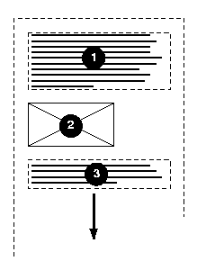
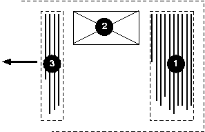
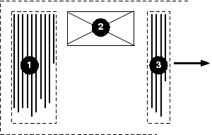
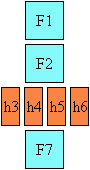

Inline Direction and Bidirectionality
While the characters in most scripts are written from left to right, certain scripts are written from right to left. In some documents, in particular those written with the Arabic or Hebrew script, and in some mixed-language contexts, text in a single (visually displayed) block may appear with mixed directionality. This phenomenon is called bidirectionality, or "bidi" for short.
The Unicode standard (Unicode Standard Annex #9) defines a complex algorithm for determining the proper directionality of text. The algorithm consists of an implicit part based on character properties, as well as explicit controls for embeddings and overrides. CSS relies on this algorithm to achieve proper bidirectional rendering. The 'direction' and 'unicode-bidi' properties allow authors to specify how the elements and attributes of a document language map to this algorithm.
User agents that support bidirectional text must apply the Unicode bidirectional algorithm to every sequence of inline boxes uninterrupted by a forced line break or block boundary. This sequence forms the "paragraph" unit in the bidirectional algorithm. The paragraph embedding level is set according to the value of the 'direction' property of the containing block rather than by the heuristic given in steps P2 and P3 of the Unicode algorithm.
Because the directionality of a text depends on the structure and semantics of the document language, these properties should in most cases be used only by designers of document type descriptions (Dtds), or authors of special documents. If a default style sheet specifies these properties, authors and users should not specify rules to override them.
The HTML 4 specification ([[HTML401]], section 8.2) defines bidirectionality behavior for HTML elements. The style sheet rules that would achieve the bidi behaviors specified in [[HTML401]] are given below. The HTML 4 specification also contains more information on bidirectionality issues.
*[dir="ltr"] { direction: ltr; unicode-bidi: embed; }
*[dir="rtl"] { direction: rtl; unicode-bidi: embed; }
bdo[dir="ltr"] { direction: ltr; unicode-bidi: bidi-override; }
bdo[dir="rtl"] { direction: rtl; unicode-bidi: bidi-override; }
Because HTML UAs can turn off CSS styling, we advise HTML authors to use the HTML 'dir' property and <bdo> element to ensure correct bidirectional layout in the absence of a style sheet.
Specifying Directionality: the 'direction' property
| Name: | direction |
|---|---|
| Value: | ltr | rtl |
| Initial: | ltr |
| Applies to: | all elements |
| Inherited: | yes |
| Percentages: | N/A |
| Media: | visual |
| Computed value: | specified value |
This property specifies the inline progression of text and elements on a line, and the direction of embeddings and overrides (see 'unicode-bidi') for the Unicode bidirectional algorithm. In addition, it specifies the direction of table column layout, the direction of horizontal overflow, and the position of an incomplete last line in a block in case of 'text-align: justify'.
Values for this property have the following meanings:
- ltr
- Left-to-right direction.
- rtl
- Right-to-left direction.
For the 'direction' property to affect reordering in inline-level elements, the 'unicode-bidi' property's value must be 'embed' or 'override'.
The 'direction' property, when specified for table column elements, is not inherited by cells in the column since columns are not the ancestors of the cells in the document tree. Thus, CSS cannot easily capture the "dir" attribute inheritance rules described in [[HTML401]], section 11.3.2.1.
Embeddings and Overrides: the 'uncode-bidi' property
| Name: | unicode-bidi |
|---|---|
| Value: | normal | embed | ( bidi-override || isolate ) |
| Initial: | normal |
| Applies to: | all elements, but see prose |
| Inherited: | no |
| Percentages: | N/A |
| Media: | visual |
| Computed value: | specified value |
Values for this property have the following meanings:
- normal
- The element does not open an additional level of embedding with respect to the bidirectional algorithm. For inline-level elements, implicit reordering works across element boundaries.
- embed
- If the element is inline-level, this value opens an additional level of embedding with respect to the bidirectional algorithm. The direction of this embedding level is given by the 'direction' property. Inside the element, reordering is done implicitly. This corresponds to adding a LRE (U+202A; for 'direction: ltr') or RLE (U+202B; for 'direction: rtl') at the start of the element and a PDF (U+202C) at the end of the element.
- bidi-override
- For inline-level elements this creates an override. For block-level, table-cell, table-caption, or inline-block elements this creates an override for inline-level descendants not within another block-level, table-cell, table-caption, or inline-block element. This means that inside the element, reordering is strictly in sequence according to the 'direction' property; the implicit part of the bidirectional algorithm is ignored. This corresponds to adding a LRO (U+202D; for 'direction: ltr') or RLO (U+202E; for 'direction: rtl') at the start of the element and a PDF (U+202C) at the end of the element.
- isolate
- For the purposes of the Unicode bidirectional algorithm, the contents of the element are considered to be inside a separate, independent paragraph, and for the purpose of bidi resolution in its containing paragraph (if any), the element itself is treated as if it were an Object Replacement Character (U+FFFC). (If the element is broken across multiple lines, then each box of the element is treated as an Object Replacement Character.)
The final order of characters in each block-level element is the same as if the bidi control codes had been added as described above, markup had been stripped, and the resulting character sequence had been passed to an implementation of the Unicode bidirectional algorithm for plain text that produced the same line-breaks as the styled text. In this process, non-textual entities such as images are treated as neutral characters, unless their 'unicode-bidi' property has a value other than 'normal', in which case they are treated as strong characters in the 'direction' specified for the element.
Please note that in order to be able to flow inline boxes in a uniform direction (either entirely left-to-right or entirely right-to-left), more inline boxes (including anonymous inline boxes) may have to be created, and some inline boxes may have to be split up and reordered before flowing.
Because the Unicode algorithm has a limit of 61 levels of embedding, care should be taken not to use 'unicode-bidi' with a value other than 'normal' unless appropriate. In particular, a value of 'inherit' should be used with extreme caution. However, for elements that are, in general, intended to be displayed as blocks, a setting of 'unicode-bidi: embed' is preferred to keep the element together in case display is changed to inline (see example below).
The following example shows an XML document with bidirectional text. It illustrates an important design principle: Dtd designers should take bidi into account both in the language proper (elements and attributes) and in any accompanying style sheets. The style sheets should be designed so that bidi rules are separate from other style rules. The bidi rules should not be overridden by other style sheets so that the document language's or Dtd's bidi behavior is preserved.
Example of Bidirectional Text
In this example, lowercase letters stand for inherently left-to-right characters and uppercase letters represent inherently right-to-left characters. The text stream is shown in logical backing store order.
<HEBREW>
<PAR>HEBREW1 HEBREW2 english3 HEBREW4 HEBREW5</PAR>
<PAR>HEBREW6 <EMPH>HEBREW7</EMPH> HEBREW8</PAR>
</HEBREW>
<ENGLISH>
<PAR>english9 english10 english11 HEBREW12 HEBREW13</PAR>
<PAR>english14 english15 english16</PAR>
<PAR>english17 <HE-QUO>HEBREW18 english19 HEBREW20</HE-QUO></PAR>
</ENGLISH>
Since this is XML, the style sheet is responsible for setting the writing direction. This is the style sheet:
/* Rules for bidi */
HEBREW, HE-QUO {direction: rtl; unicode-bidi: embed;}
ENGLISH {direction: ltr; unicode-bidi: embed;}
/* Rules for presentation */
HEBREW, ENGLISH, PAR {display: block;}
EMPH {font-weight: bold;}
The HEBREW element is a block with a right-to-left base direction, the ENGLISH element is a block with a left-to-right base direction. The PARs are blocks that inherit the base direction from their parents. Thus, the first two PARs are read starting at the top right, the final three are read starting at the top left. Please note that HEBREW and ENGLISH are chosen as element names for explicitness only; in general, element names should convey structure without reference to language.
The EMPH element is inline-level, and since its value for 'unicode-bidi' is 'normal' (the initial value), it has no effect on the ordering of the text. The HE-QUO element, on the other hand, creates an embedding.
The formatting of this text might look like this if the line length is long:
5WERBEH 4WERBEH english3 2WERBEH 1WERBEH
8WERBEH 7WERBEH 6WERBEH
english9 english10 english11 13WERBEH 12WERBEH
english14 english15 english16
english17 20WERBEH english19 18WERBEH
Note that the HE-QUO embedding causes HEBREW18 to be to the right of english19.
If lines have to be broken, it might be more like this:
2WERBEH 1WERBEH
-EH 4WERBEH english3
5WERB
-EH 7WERBEH 6WERBEH
8WERB
english9 english10 en-
glish11 12WERBEH
13WERBEH
english14 english15
english16
english17 18WERBEH
20WERBEH english19
Because HEBREW18 must be read before english19, it is on the line above english19. Just breaking the long line from the earlier formatting would not have worked. Note also that the first syllable from english19 might have fit on the previous line, but hyphenation of left-to-right words in a right-to-left context, and vice versa, is usually suppressed to avoid having to display a hyphen in the middle of a line.
Block Flow Direction: the 'block-flow' property
| Name: | block-flow |
|---|---|
| Value: | tb | rl | lr | bt |
| Initial: | tb |
| Applies to: | ?? |
| Inherited: | yes |
| Percentages: | N/A |
| Media: | visual |
| Computed value: | specified value |
This property sets the block-flow direction. Possible values:
- tb
- Top-to-bottom block flow. The writing mode is horizontal.
- rl
- Right-to-left block flow. The writing mode is vertical.
- lr
- Left-to-right block flow. The writing mode is vertical.
- bt
- Bottom-to-top block flow. The writing mode is horizontal.
Would downward/leftward/rightward/upward
be better value names?
An inline element that has a different 'block-flow' from its containing block becomes an 'inline-block' element [CSS3-box]. switch to CSS2.1
Details
Box layout in vertical writing modes is exactly analogous to layout in the horizontal writing modes.
- Calculations that refer to 'width' use 'height' instead, and vice versa.
- Calculations that refer to the '*-left' and '*-right' box properties (border, margin, padding, outline) use '*-top' and '*-bottom' instead, and vice versa. In RL layout '*-right' is analogous to TB's '*-top'; in LR layout '*-left' is analogous to TB's '*-top'. The logic for this is clear if you lock an arrow representing the TB block flow to a compass of the four directions and rotate it to represent RL and LR flow.
- Layout effects that depend on the directionality to choose between left and right (e.g. overflow, overconstraint resolution, 'start' values for 'text-align' and other properties, table column ordering) depend instead on the effective physical directionality (top-to-bottom or bottom-to-top) to choose between top and bottom.
When an element has a different 'block-flow' from its containing block two cases are possible: These descriptions need work
- The two block flows are perpendicular to each other. (For example, 'tb' and 'lr'). In such cases, detail calculation of width/height and determination of containing block dim
- The two block-flows are parallel to each other. (For example, 'rl' and 'lr').
Example
In the following example, two blocks elements (1 and 3) separated by an image (2) are presented in various flow writing modes.
Here is a diagram of horizontal writing mode (block-flow: tb):

Here is a diagram for the right-to-left vertical writing mode commonly
used in East Asia (block-flow: rl):

And finally, here is a diagram for the left-to-right vertical
writing mode used for Uighur and Mongolian (block-flow: lr):

The 'writing-mode' shorthand property
| Name: | writing-mode |
| Value: | lr-tb | rl-tb | tb-rl | bt-rl | tb-lr | bt-lr |
| Initial: | not defined for shorthand properties |
| Applies to: | all elements and generated content |
| Inherited: | yes |
| Percentages: | N/A |
| Media: | visual |
| Computed value: | see individual properties |
The 'writing-mode' property is a shorthand property for the 'direction' property and the 'block-flow' property. Although strictly speaking, the property has no initial value, it is equivalent to 'lr-tb'. The definition of the property values are established by the following table, which shows the setting of the constituent properties and example of common usage.
| writing-mode: | direction: | block-flow: | Common Usage: |
|---|---|---|---|
| lr-tb | ltr | tb | Latin-based, Greek, Cyrillic writing systems (and many others) |
| rl-tb | rtl | tb | Arabic, Hebrew writing systems |
| tb-rl | ltr | rl | East Asian writing systems in vertical mode |
| bt-rl | rtl | rl | Arabic script block quote embedded in East Asian vertical text |
| tb-lr | ltr | lr | Mongolian script writing system |
| bt-lr | rtl | lr | Arabic script block quote embedded in Mongolian script document |
Mixing the 'writing-mode' in normal usage
In East Asian documents, it is often preferred to display certain Latin-based strings, such as numerals in a year, always in a horizontal layout orientation regardless of the flow orientation of the line of text these strings appear in, as in:


Horizontal in vertical ("Tate-chu-yoko")
In Japanese, this effect is known as "Tate-chu-yoko". In order to achieve it in a CSS document, the Latin string should be enclosed in an inline element with a horizontal writing mode, as in:
.date {block-flow: tb;}
<span class="date">1996</span>
Logical directional properties and values
Terminology
In this section we use the following terminology about directional properties:
- logical properties
- the properties regarding the direction relative to the writing-mode (e.g., margin-before)
- physical properties
- the properties regarding the physical direction (e.g., margin-top)
- corresponding properties
- the pair of a logical property and its corresponding physical property.
The sides of a box are designated as follows:
- before side
- the side occurring first in the block direction (=top side in lr-tb writing-mode)
- after side
- the side opposite the before side (=bottom side in lr-tb writing-mode)
- start side
- the side occurring first in the inline direction (=left side in lr-tb writing-mode)
- end side
- the side opposite the start side (=right side in lr-tb writing-mode)
The dimensions of a box are designated as follows:
- logical width
- the dimension in the inline direction (=width in horizontal writing-mode; height in vertical writing-mode)
- logical height
- the dimension in the block direction (=height in horizontal writing-mode; width in vertical writing-mode)
An English (LTR-TB) block:
<---- width / logical width --->
top side/
before side
+------------------------------+ A
left side/ | ---inline direction ---> | right side/ |
start side | | | end side |
| | block * horizontal * | height/
| | direction *writing mode* | logical height
| V | |
+------------------------------+ V
bottom side/
after side
A vertical Japanese block (TTB-RL):
<--- width / logical height --->
top side/
start side
+------------------------------+ A
left side/ | <---block direction--- | right side/ |
after side | | | before side |
| * vertical * inline| | height/
| *writing mode* direction| | logical width
| V | |
+------------------------------+ V
bottom side/
end side
Logical properties: 'margin-before', 'logical-width', etc.
| Name: | margin-before, margin-after, margin-start, margin-end |
|---|---|
| Value: | <length> | <percentage> | auto |
| Initial: | 0 |
| Applies to: | same as 'margin' |
| Inherited: | no |
| Percentages: | logical-width of containing block |
| Media: | visual |
| Computed value: | the percentage as specified or the absolute length or 'auto' (see text) |
| Name: | padding-before, padding-after, padding-start, padding-end |
|---|---|
| Value: | <length> | <percentage> |
| Initial: | 0 |
| Applies to: | all elements |
| Inherited: | no |
| Percentages: | logical-width of containing block |
| Media: | visual |
| Computed value: | <length> (see text) |
| Name: | border-before-width, border-after-width, border-start-width, border-end-width |
|---|---|
| Value: | <border-width> |
| Initial: | medium |
| Applies to: | all elements |
| Inherited: | no |
| Percentages: | logical-width of containing block |
| Media: | visual |
| Computed value: | absolute length; '0' if the border style is 'none' or 'hidden' (see text) |
| Name: | border-before-style, border-after-style, border-start-style, border-end-style |
|---|---|
| Value: | <border-style> |
| Initial: | none |
| Applies to: | all elements |
| Inherited: | no |
| Percentages: | N/A |
| Media: | visual |
| Computed value: | specified value (see text) |
| Name: | border-before-color, border-after-color, border-start-color, border-end-color |
|---|---|
| Value: | <color> |
| Initial: | currentcolor |
| Applies to: | all elements |
| Inherited: | no |
| Percentages: | N/A |
| Media: | visual |
| Computed value: | the computed color (see text) |
| Name: | border-before, border-after, border-start, border-end |
|---|---|
| Value: | <border-width> || <border-style> || <color> |
| Initial: | (see individual properties) |
| Applies to: | all elements |
| Inherited: | no |
| Percentages: | see individual properties |
| Media: | visual |
| Computed value: | see individual properties |
| Name: | logical-width, logical-height |
|---|---|
| Value: | <length> | <percentage> | auto |
| Initial: | auto |
| Applies to: | same as 'width' and 'height' |
| Inherited: | no |
| Percentages: | logical-width, resp. logical-height of containing block |
| Media: | visual |
| Computed value: | the percentage as specified or the absolute length or 'auto' (see text) |
| Name: | min-logical-width, min-logical-height |
|---|---|
| Value: | <length> | <percentage> |
| Initial: | 0 |
| Applies to: | same as 'width' and 'height' |
| Inherited: | no |
| Percentages: | logical-width, resp. logical-height of containing block |
| Media: | visual |
| Computed value: | the percentage as specified or the absolute length (see text) |
| Name: | max-logical-width, max-logical-height |
|---|---|
| Value: | <length> | <percentage> | none |
| Initial: | none |
| Applies to: | same as 'width' and 'height' |
| Inherited: | no |
| Percentages: | logical-width, resp. logical-height of containing block |
| Media: | visual |
| Computed value: | the percentage as specified or the absolute length or 'none' (see text) |
These properties are writing-mode relative (logical) equivalents of the corresponding physical properties.
The mappings of logical properties into physical properties are as follows:
| logical properties | corresponding physical properties for each writing-mode | |||||
|---|---|---|---|---|---|---|
| lr-tb | rl-tb | tb-rl | bt-rl | tb-lr | bt-lr | |
| margin-before | margin-top | margin-top | margin-right | margin-right | margin-left | margin-left |
| margin-after | margin-bottom | margin-bottom | margin-left | margin-left | margin-right | margin-right |
| margin-start | margin-left | margin-right | margin-top | margin-bottom | margin-top | margin-bottom |
| margin-end | margin-right | margin-left | margin-bottom | margin-top | margin-bottom | margin-top |
| padding-*, border-* | (similar with margin-*) | |||||
| logical-width | width | height | ||||
| logical-height | height | width | ||||
| min-logical-width | min-width | min-height | ||||
| min-logical-height | min-height | min-width | ||||
| max-logical-width | max-width | max-height | ||||
| max-logical-height | max-height | max-width | ||||
The computed value of a logical property affects the computed value of the corresponding physical property, and vice versa.
For example, if the writing-mode of the element is lr-tb, the computed value of the 'margin-before' overrides the 'margin-top'.
If both logical and physical properties are specified on the same element, these corresponding properties are treated as same property and then normal cascading rules are applied.
The writing-mode value of the element is used for the mapping of corresponding properties and therefore must be evaluated first.
Logical property values: before, after, start, end
Properties that accept physical directional values (top, bottom, left, right), should also accept logical directional values (before, after, start, end). In such case, the logical values are treated as corresponding physical values. The writing-mode value of the element is used for the the mapping of logical into physical values and therefore must be evaluated first.
The following properties (but not limited to) are applicable to this case:
- 'float'
- 'clear'
- 'background-position'
- 'text-align'